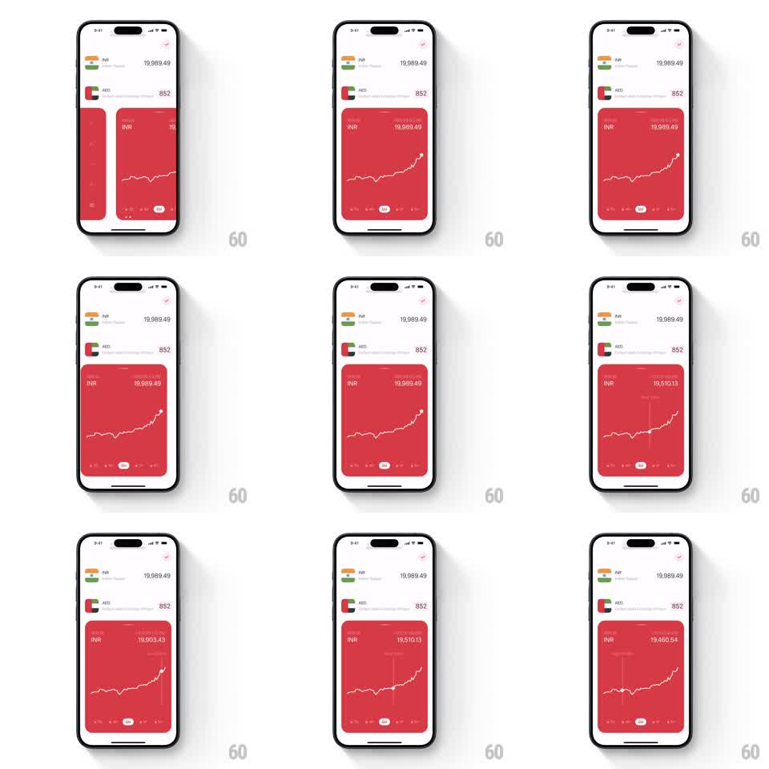

Media
Frame-by-frame

Rebuild this interaction 1:1: the converter's rate graph - a full-width red card with a line chart, and a finger-driven scrubber that snaps a vertical crosshair to the nearest point while the header value rolls to that point's rate.

Rebuild this interaction 1:1: the converter's rate graph - a full-width red card with a line chart, and a finger-driven scrubber that snaps a vertical crosshair to the nearest point while the header value rolls to that point's rate. ## Integration Integration: stack-agnostic spec - springs given as stiffness/damping, timed motions as duration + curve; map every value to your framework and animation library of choice. ## Scene Red rounded card pinned under the currency rows: "INR" label and live value top-left, currency name top-right, a jagged white line chart across the card, and a small range tab pill (1M etc.) at the bottom edge. ## Motion spec Pattern: crosshair scrub with rolling value, continuous under drag. - The chart draws itself in on entry (stroke reveal left to right, 900ms, ease-out). - Touch down on the card spawns a vertical crosshair line and a node dot at the nearest data point (120ms fade in); the line between crosshair and edge dims slightly. - Dragging tracks the finger horizontally 1:1; the dot snaps point to point and the top-right value rolls odometer-style to each point's rate (~150ms per roll, ease-out), with the date label fading between values. - The range pill at the bottom nudges to follow the finger's x position with lag (spring stiffness 200 damping 22). - Lift and the crosshair and dot fade out (200ms); the header value rolls back to the current rate. ## Calibration - The snap is magnetic: the dot is always on a real data point, never free-floating between them. - The value roll keeps up with a fast scrub - it can skip intermediate digits but never lags behind the crosshair. ## Reduced motion Crosshair appears without fade; value sets without rolling. ## Don't miss - The dimmed trailing line under scrub - it visually marks "past" versus the bright un-scrubbed remainder. - The crosshair spans the full card height, clipped inside the card's rounded corners.